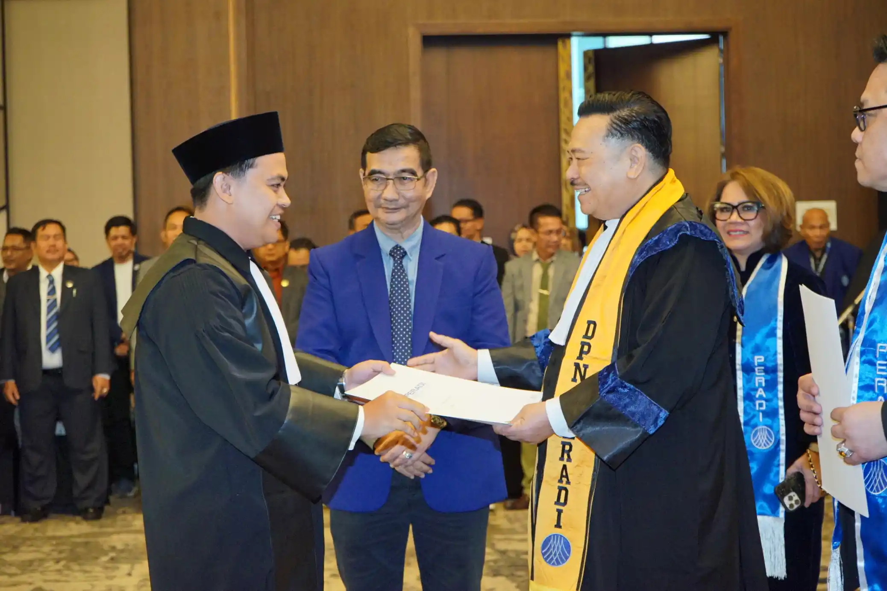
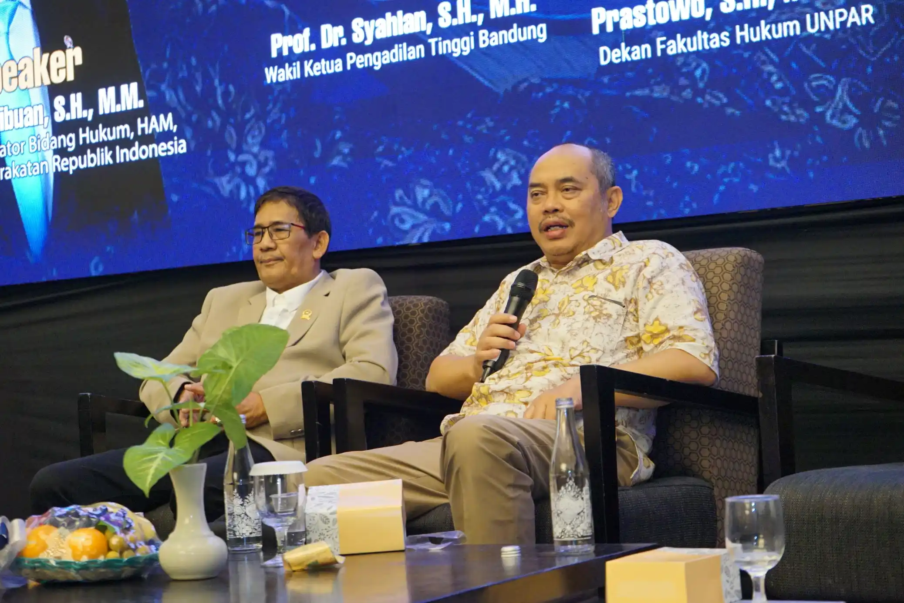
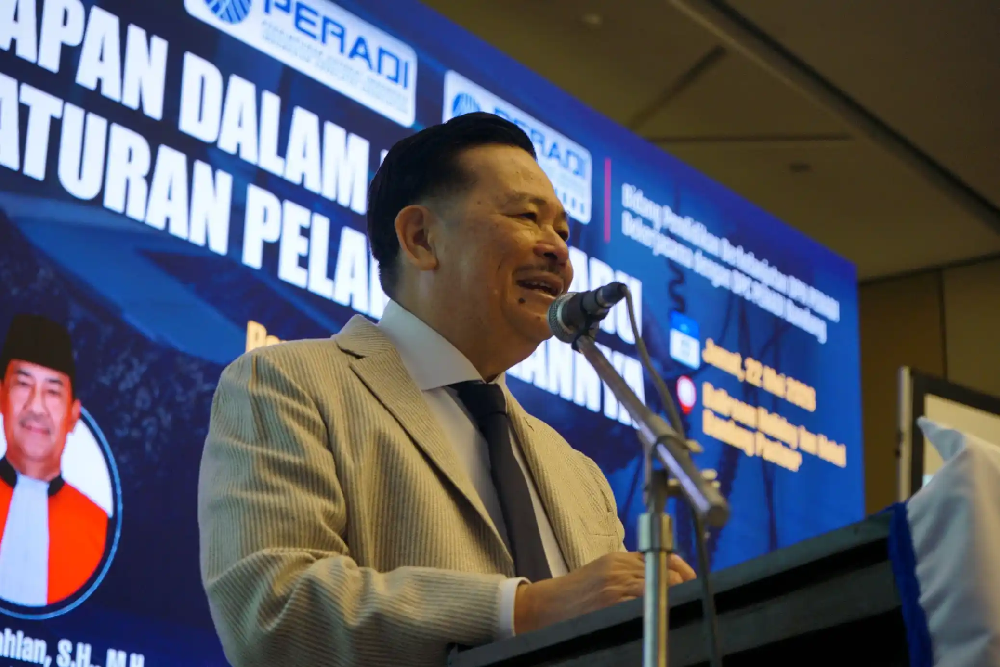
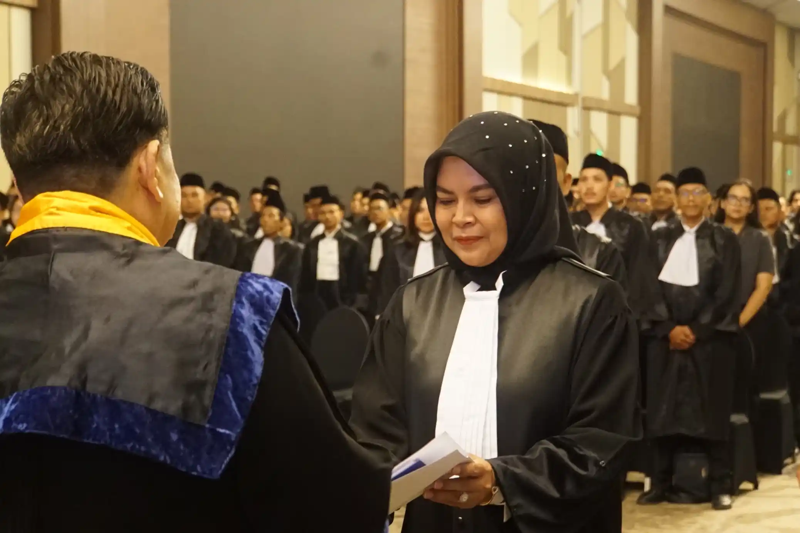

Event
Pengangkatan Advokat PERADI dan Seminar Nasional KUHAP Baru di Bandung

Kegiatan Pengangkatan & Pembekalan Advokat serta Seminar Nasional bertema “Urgensi Penyadapan dalam KUHAP Baru dan Konsep Peraturan Pelaksanaannya” berlangsung di Ballroom Holiday Inn Bandung Pasteur, Jumat (22/5/2026).
Acara diawali dengan registrasi peserta sejak pagi hari yang diikuti oleh calon advokat, anggota PERADI, sivitas akademika, serta masyarakat umum. Setelah proses registrasi dan gladi resik, kegiatan dilanjutkan dengan pembukaan resmi pengangkatan advokat yang dipandu oleh MC DPC PERADI Bandung.
Prosesi Pengangkatan Advokat Berlangsung Khidmat
Dalam rangkaian prosesi tersebut, peserta mengikuti pembacaan SK Pengangkatan Advokat, pembekalan, hingga prosesi pengangkatan resmi. Suasana berlangsung khidmat dengan rangkaian acara seperti menyanyikan lagu Indonesia Raya, Hymne dan Mars PERADI, hingga sesi foto bersama.

Seminar Nasional Bahas KUHAP Baru
Memasuki sesi seminar nasional pada siang hari, kegiatan menghadirkan sejumlah narasumber penting dari kalangan hukum dan akademisi. Seminar membahas urgensi penyadapan dalam KUHAP baru beserta konsep aturan pelaksanaannya yang menjadi perhatian dalam perkembangan hukum nasional.

Sesi keynote speech dan pembekalan advokat disampaikan oleh Prof. Dr. Otto Hasibuan, S.H., M.M., dilanjutkan dengan sesi pemaparan materi serta diskusi interaktif bersama para narasumber dan peserta seminar.
Kegiatan berlangsung hingga sore hari dan ditutup dengan penyerahan plakat, foto bersama, serta penyerahan SK dan TPSA kepada peserta. Antusiasme peserta terlihat tinggi sepanjang rangkaian acara berlangsung.

Dokumentasi Profesional untuk Event Formal
Untuk mendukung kebutuhan publikasi dan arsip kegiatan, dokumentasi acara dipercayakan kepada Gunawan Satyakusuma jasa dokumentasi Bandung yang dikenal berpengalaman dalam menangani seminar nasional, kegiatan organisasi, dan event formal profesional di Bandung.